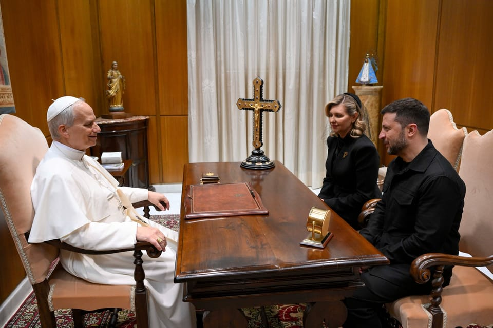

世界苦茶05月19日新闻 | 39条 | 美财长威胁对缺乏谈判善意国家加关税

美财长威胁对缺乏谈判善意国家加关税 | 罗马尼亚亲欧盟领导人选举获胜 | 教宗会见首个国家元首为泽连斯基 | 泽连斯基在罗马会见北美各国领导人 | 贺建奎因为妻子入境护照等事件再兴波澜
三个水枪手
苦茶数据
美元兑人民币：7.21（昨日7.21，前日7.21）
美元兑日元：145.32（昨日145.94，前日145.28）
上证指数：3364（昨日3367，前日3389）
标普500指数：休市（昨日5958，前日5916）
比特币：103111（昨日103436，前日103467）
布伦特原油：65.13（昨日65.41，前日64.50）
中国新闻
• 尹力强调加强金融领导 ：中共北京市委书记尹力形容，金融是国民经济的血脉、现代经济的核心，并表示要坚持和加强中共对金融工作的全面领导，进一步增强做好首都金融工作的责任担当。据《北京日报》报道，尹力上星期五围绕“服务国家金融管理中心建设，推动首都金融高质量发展”调查研究，并召开金融工作座谈会。他说，金融是国民经济的血脉、现代经济的核心，关系中国式现代化建设全局。
• 蔡奇要求整治基层作风 ：中共政治局常委、中央书记处书记蔡奇在河北唐山市调研时说，开展学习教育是今年中共党建工作的重点任务，并称要坚决整治“吃喝风”、侵害群众利益、不担当不作为等问题。据新华社报道，蔡奇5月16日至17日在河北唐山检查指导深入贯彻中共中央八项规定精神学习教育工作。他强调，要深入学习贯彻中共总书记习近平关于加强党的作风建设的重要论述，坚持问题导向和严的标准，一体推进学查改，结合不同层级、地区、领域、行业实际加强分类指导，推动学习教育走深走实。
• 陆委会否认禁欧阳娜娜 ：网传视频称台湾艺人欧阳娜娜因发布武统言论，终生不得入境台湾，台湾陆委会在社媒发文澄清，视频内容虚假不实，“意图破坏民众对政府的信任、挑拨台湾社会内部情感”。这部题为《欧阳娜娜发布武统言论！台湾当局宣布取消其中华民国国籍，终生不得入境台湾！》的视频，上星期五起在YouTube流传。视频旁白称，欧阳娜娜因在中国大陆军演期间，在社群平台发布涉及“武统”台湾的言论与图卡，引发台湾社会强烈反弹。对此，陆委会与台湾文化部联合宣布，已依《两岸人民关系条例》与相关国安法规定，对欧阳娜娜展开行政与法律查处程序。
• 共青团声援欧阳娜娜 ：台湾陆委会公布，将调查赴陆发展的台湾艺人与中共之间的合作关系，欧阳娜娜等人将被列为重点行政查察对象后，共青团中央在微博发文告诉欧阳娜娜“别怕”。共青团中央星期五在微博写道：“欧阳娜娜等艺人被台当局威胁？别怕，14亿中国人挺你！”陆委会主委邱垂正星期三说，将调查特定配合中共对台操作的艺人，若属实将依法处理。
• 中国去年博物馆客流创新高 ：中国出现“博物馆热”，去年各地博物馆接待访客总量达14.9亿人次。据新华社报道，2025年国际博物馆日中国主会场活动星期天在北京大运河博物馆举行。活动开幕式上公布，中国国家文物局发布最新数据显示，2024年全国博物馆举办陈列展览4.3万个、教育活动51.1万场，接待观众14.9亿人次。
• 教师殴学生并威胁扔窗 ：中国浙江瑞安一名教师被指殴打一名10岁男学生，甚至将学生抱到三楼窗口，威胁要将他扔下去。这名教师已被行政拘留。综合中国《现代快报》和澎湃新闻报道，男生冉冉在浙江瑞安市马屿镇中心小学读四年级。男生的陈姓父亲称，事情发生在4月17日下午延时课期间，冉冉在玩水枪时，不慎喷到老师。冉冉随后被这名教师扇耳光、卡住脖子殴打，并将冉冉抱到走廊窗口处，威胁要把孩子扔下去。
• 世卫大会涉台议题升温 ：世界卫生大会将在星期一开幕，中国常驻联合国日内瓦办事处和瑞士其他国际组织代表陈旭星期六说，少数国家在世卫大会操弄台湾问题。据中新社报道，陈旭在世卫大会中国代表团媒体吹风会上说，中国大陆对涉台提案坚决反对。他说，今年是中国人民抗日战争暨世界反法西斯战争胜利80周年，也是台湾光复80周年，并指台湾民进党政府在此关键节点勾连少数国家，搞涉台提案，挑战了二战胜利果实、反法西斯国际文件和战后国际秩序。陈旭也说，在一个中国原则前提下，中国大陆中央政府对台湾参与全球卫生事务作出妥善安排。过去一年，中国大陆中央政府共批准台湾11批次12人次参加世卫组织技术活动。没有哪怕一例符合一个中国原则的涉台技术交流受到来自中央政府的阻拦。
• 隆林山洪三死一失联 ：中国广西隆林突发山洪，导致三人死亡、一人失联。根据中共隆林各族自治县委宣传部微信公众号发布的通报，5月16日至17日，受高空槽和低层切变线共同影响，隆林各族自治县部分乡镇出现大雨到暴雨、局地大暴雨天气。隆林各族自治县应急管理局在通报中说，强降雨导致岩茶乡洪水爆发，造成在冷独村南怀屯山上搭建工棚暂住的四名种植桉树人员失联。
• 港府斥美议员制裁法案 ：美国议员提出一项制裁法案，目标为香港法官和检察官，香港批评此举是妄图恫吓维护国家安全的有关特区人员，并强调无惧任何威吓。香港《南华早报》报道，不久前提交给美国参议院的《香港司法制裁法案》（Hong Kong Judicial Sanctions Act）将可能要求进行强制审查，决定是否要根据美国法律对多位高级法官和律师等45人实施制裁，其中包括终审法院首席法官张举能、高等法院原讼法庭法官李运腾，以及副刑事检控专员周天行。香港特区政府星期六回应时，批评此举“妄图恫吓维护国家安全的有关特区人员，表示强烈谴责”。
• 贺建奎称中国政府拒绝其妻入境是大错误，将赴美工作： 中国科学家贺建奎星期天在社交平台发文称，中国政府拒绝他的妻子入境，并说如果仍不允许妻子赴华，他将离开中国，前往美国工作。贺建奎在X发布几篇推文指中国政府拒绝妻子Cathy Tie入境的做法是“大错误”，并说妻子正从美国洛杉矶飞往中国北京与他团聚，而且妻子“现在在机场等了三个多小时”。贺建奎也写道：“如果中国政府不允许我的妻子前往北京和我一起生活，我就会离开中国去美国工作。”他之后再发文称：“现在将要去美国大使馆更新我的美国绿卡。” （翻评：牢狱生活深刻地改变了贺老师的内心。而且好像他被边控了。）
亚太印太新闻
• 石破内阁支持率再下滑 ：共同社的最新舆论调查结果显示，日本首相石破茂内阁支持率为27.4%，较上次4月的调查下降5.2个百分点，刷新了3月创下的27.6%的最低纪录。不支持率为55.1%，反映出公众对政府表现的不满情绪正在加深。调查同时显示，物价持续上涨背景下，政府在应对民生压力方面正面临更大舆论压力。关于消费税政策，合计73.2%的受访者支持采取减税措施，包括“仅对食品减税”“全面减税”以及“应当废除”消费税。仅有24.8%的人认为“不应减税”。在具体民生问题上，高达87.1%的受访者认为政府对于大米价格上涨的应对措施“不充分”，反映民众对物价调控成效的广泛质疑。 （翻评：日本要废除消费税，健保和养老体系不就崩溃了么。）
• 泰厂墙塌涉中资钢筋 ：泰国东部一家工厂墙体坍塌，所用劣质钢筋与今年3月28日因地震而倒塌的曼谷审计署大楼一样，由中资企业新科源生产。《曼谷邮报》报道，春武里府一家工厂二楼的延伸墙体周五上午11时左右倒塌，一名女员工受伤送医，附近停放的七辆车子被压损。这家工厂运营已有两三年，生产手机壳、平板电脑保护套、钥匙扣和皮革用品。泰国工业部长阿卡那当天巡视出事工厂后，在脸书发文说，倒塌墙体所使用的20毫米变形钢筋和9毫米圆钢筋都标有“SKY”的字样，显示钢铁是由新科源钢铁公司所生产。阿卡那说，他已下令全面彻查工厂倒塌的原因以及工厂所使用的建筑材料。
• 印度火灾致17死多人伤 ：印度南部特伦甘纳邦首府海得拉巴市一栋建筑18日晨发生火灾，造成17人丧生、多人受伤。火灾发生在该市查米纳广场附近的一栋三层居民楼。起火点位于建筑底层，事故原因初步判断为电源短路。在遇难者当中，多人在睡梦中因浓烟窒息死亡。
科技新闻
• 罗永浩AI项目或合作百度 ：新浪科技18日从知情人士处获悉，罗永浩的AI创业项目或与百度展开合作。近日，罗永浩现身百度办公区的消息也引发了小范围讨论。据了解，罗永浩自2022年创立细红线科技有限公司，原计划聚焦AR领域，后因技术瓶颈及市场竞争，于2022年底转向AI赛道。2025年1月4日，其旗下AI初始项目Jarvis推出的“J1Assistant”综合性AI助手应用在海外市场上线。此前，有报道称百度计划于今年下半年发布全新的AI大模型“文心5.0”。
财经新闻
• 中国四月经济数据喜忧参半： 中国4月社会商品零售33007亿元、同比增5.1%，弱于预期。餐饮收入4167亿元、同比增5.2%。4月规上工业增加值同比增长6.1%，环比增长0.22%。强于预期。4月CPI同比跌0.1%，扣除食品和能源后为同比涨0.5%。PPI同比跌2.7%、环比跌0.4%。4月末商品房待售78142万平、同比增4.8%，其中住宅41703万平、同比增6.6%。4月城镇调查失业率5.1%，企业周均工作48.3小时。
• 柬打击非法榴梿进口 ：柬埔寨海关总署下令所有边境单位，加强打击从邻国非法进口榴梿的行为。这些榴梿可能含有对人体健康有害的化学物质，被不法商贩走私进口牟利。柬埔寨媒体报道，今年初中国加强对新鲜进口榴梿的检查措施，退回大量从泰国和越南的进口榴梿，导致市场供应过剩。一些不法之徒从泰国和越南走私榴梿到柬埔寨，并假称是柬埔寨种植和未使用不明化学物质处理的榴梿，涉嫌误导消费者及危害公众健康。柬埔寨海关总署上星期四发布指示，要求各相关部门采集市场上的榴梿样本进行分析，一旦发现含有害化学物质，将扣押在有关地点出售的所有榴梿，并采取进一步的法律行动。
• 澳总理淡化自贸协议 ：澳大利亚总理阿尔巴尼斯在即将与欧盟委员会主席冯德莱恩会晤前，淡化了双方就自由贸易协定取得突破的可能性。路透社报道，自2018年以来，澳洲与欧盟一直就自贸协定进行谈判，但澳洲于2023年10月拒绝了欧盟提出的协议草案，此举被认为将使达成协议的前景在未来数年内变得渺茫。阿尔巴尼斯政府当时认为，有关协议在农产品市场准入方面让步不足，未能满足澳洲在牛肉、羊肉、乳制品和糖类等关键领域的出口诉求。阿尔巴尼斯此行前往罗马，将出席天主教新任教宗良十四世的就职典礼，并在场边与冯德莱恩会面。
• 中对聚甲醛征反倾销税 ：中国大陆以原产于美国、欧盟、台湾和日本的进口共聚聚甲醛存在倾销为由，在星期天宣布对上述进口共聚聚甲醛征收反倾销税。中国大陆商务部在官网发布公告称，调查机关最终认定，原产于上述四地的进口共聚聚甲醛存在倾销，中国大陆共聚聚甲醛产业受到实质损害，而且倾销与实质损害之间存在因果关系。反倾销税措施5月19日起生效，为期五年，其中针对美国企业的税率最高，达74.9%；针对台企的税率则是介于3.8%至32.6%。
• 中国数据观测，高关税冲击4月工业同比增速料降至5.5%，投资持稳消费增5.5% ：美国4月开始的对华超高关税令中国经济阶段性承压，路透综合24家机构预估中值显示，中国4月规模以上工业增加值同比增速料回落至5.5%，这将是去年11月以来的低点。消费方面，在以旧换新政策和假期出行升温共同推动下，预计4月社会消费品零售总额同比增5.5%，低于上月的5.9%，但仍处较高水平。而投资料保持稳定，1-4月固定资产投资同比增速预计持平于4.2%。
• 美国财长贝森特表示，对谈判缺乏"善意"国家的关税将回到解放日水平 ：美国财政部长贝森特周日在接受电视专访时表示，贸易谈判缺乏"善意"的国家，总统特朗普将会以4月2日宣布的税率对其征收关税。贝森特没有说明何谓"善意"谈判，也没有说明何时会宣布对某些国家恢复"解放日"对等关税。贝森特表示，特朗普政府把重点放在18个最重要的贸易伙伴，达成任何协议的时间也将取决于各国是否带着善意谈判，对于缺乏善意的国家将发函通知。
• 特朗普称美国官员将在数周内给各国发信，提出贸易往来的条件 ：美国总统特朗普表示，未来两到三周内，美国官员将向各国发送信函，告诉“他们在美国做生意需要付出哪些代价”。特朗普没有进一步解释这句话是什么意思，并表示各国可以提出申述，美国官员无法与所有“希望达成协议的150个国家”逐一会谈。
• 外资3月美债持仓突破9万亿美元创新高，中国减仓降至第三大持有国 ：美国财政部公布的数据显示，外资3月的美国公债持仓飙升至历史新高，连续第三个月上升，在特朗普总统上任几个月后，对美国公债的需求依然强劲。数据还显示，英国已超过中国，成为第二大美债持有国。中国3月美债持仓从上个月的7843亿美元降至7654亿美元。
• 瑞士央行不能排除负利率的可能性 ：瑞士央行总裁施莱格尔表示，他不能排除未来或许需要负利率的可能性，但他同时重申瑞士央行不喜欢负利率。施莱格尔还指出，只有在瑞郎被高估威胁到价格稳定时，瑞士央行才会干预市场以抑制高估，并不是为本国出口商争取竞争优势，他重申瑞士不是汇率操纵国。
• 七国集团商界领袖在G7峰会前呼吁消除贸易壁垒 ：一份公报显示，七国集团商业领袖敦促成员国取消贸易限制并投资关键矿产，以降低供应链的脆弱性。来自G7的企业和行业组织齐聚渥太华，在下个月举行的G7领导人峰会之前向东道国加拿大提出建议。联合声明向G7领导人提出了五个重点领域，包括关键矿产和材料供应及投资，而中国在该领域占据主导地位。声明还呼吁拆除特朗普的贸易壁垒。
• 中国金管总局显示，一季度商业银行不良贷款率微升，净息差较上季末下降9BP ：中国金管总局公布数据显示，2025年一季度，商业银行累计实现净利润6568亿元人民币；不良贷款余额3.4万亿元，较上季末增加1574亿元；商业银行不良贷款率1.51%，较上季末上升0.01个百分点。另外，一季度商业银行净息差为1.43%，较去年四季度末下降9个基点。
俄乌战争
• 俄发起最大无人机袭击 ：乌克兰指俄罗斯在和平谈判后加大袭击力度，更发动自2022年以来最大规模的无人机袭击，导致一名女子死亡，至少三人受伤。路透社报道，乌克兰空军星期天说，截至当天早上8时，俄罗斯已发射273架无人机，主要目标是基辅中部地区，以及东部的第聂伯罗彼得罗夫斯克和顿涅茨克地区。根据空军提供的数据，这是俄罗斯在战争期间对乌克兰发动的最大规模无人机袭击。今年2月23日，在俄罗斯全面入侵乌克兰三周年前夕，莫斯科发射创纪录的267架无人机，但此次的数量远远超过这个记录。
• 加总理与泽连斯基会谈 ：加拿大总理卡尼与乌克兰总统泽连斯基首次举行会晤，重申加拿大对乌克兰的支持。路透社报道，卡尼星期六与泽连斯基会面时说：“加拿大人民将坚定不移地支持乌克兰……没有乌克兰的全力支持和参与就不会有和平，我们绝对支持你。”两位领导人也将在星期天在罗马梵蒂冈出席新任教宗良十四世的就职弥撒。
• 俄乌直接会谈未能达成停火协议，乌克兰呼吁盟国继续向俄罗斯施压 ：基辅和莫斯科在三年多来的首次直接会谈中未能达成停火协议，俄罗斯提出的条件被一名乌克兰消息人士称为 "不切实际"，在此之后，乌克兰周五争取到了西方盟国的支持。俄罗斯对会谈表示满意，并表示愿意继续接触。会谈结束后，乌克兰总统泽连斯基随即与特朗普及法国、德国、波兰领导人通话，动员其盟友对俄罗斯采取更严厉的制裁。美国总统特朗普表示周一将与俄罗斯总统普京和乌克兰总统泽连斯基分别通话。
• 欧盟执委会主席冯德莱恩表示，正在准备新的制裁，加大对普京的压力 ：欧盟执委会主席冯德莱恩表示，欧盟正在制定一揽子新的对俄制裁措施，以加大对俄罗斯总统普京的压力。"我们将加大压力，"她说，"我们正在制定新的一揽子制裁措施，其中包括针对北溪1号和北溪2号的制裁，还包括将更多船只列入影子船队，降低油价上限，以及最后对俄罗斯金融行业实施更多制裁。"
• 特朗普称伊朗需要针对核提议尽快采取行动，伊朗否认已收到美国提议 ：特朗普表示，伊朗已收到美国关于其核计划的提议，并且知道需要迅速采取行动，以解决这一长达数十年的争端。但伊朗外交部长阿拉格齐在社交平台X发帖称，德黑兰尚未收到美国提议，且伊朗不会放弃（铀）浓缩和平利用的权利。
• 教宗良十四世首次接见外国领袖，会晤泽连斯基总统： 乌克兰总统弗拉基米尔·泽连斯基与第一夫人奥莲娜·泽连斯卡于5月18日在梵蒂冈与教宗良十四世会面，此次会晤是在教宗于圣伯多禄广场举行就职弥撒后进行的，也是这位新任教宗首次接见外国领袖。根据乌克兰总统办公室发布的声明，双方讨论的重点包括乌克兰战争、圣座在调解努力中可能扮演的角色，以及人道主义议题，如释放战俘与遣返被强行带离的乌克兰儿童。泽连斯基总统感谢梵蒂冈愿意成为乌俄之间直接谈判的潜在平台。他表示：「我们已准备好以任何能产生实质结果的形式展开对话」，并强调国际社会推动公正与持久和平的努力极为重要。
• 泽连斯基向范斯与鲁比奥通报伊斯坦堡会谈上俄方“脱离现实的要求”： 在与美国参议员J.D.范斯和马可·鲁比奥的会晤中，双方讨论了5月15日在伊斯坦堡举行的谈判。泽连斯基重申乌克兰「已准备好真正投入外交途径」，并呼吁「全面且无条件的停火」。他表示：「我们也谈到了对俄制裁的必要性、双边贸易、防务合作、战场情势以及即将进行的战俘交换。」「必须对俄罗斯施加压力，直到他们真正愿意停止战争。当然，我们也讨论了为实现公正且持久和平所需的共同步骤。感谢美国人民的支持与在拯救生命方面的领导力。」
• 丹麦宣布向乌克兰提供近6亿美元军事援助： 丹麦国防部于5月17日宣布，丹麦已准备好向乌克兰提供第26批军事援助，总价值约为40亿丹麦克朗（约合5.98亿美元）。这批援助将透过捷克弹药倡议提供额外的火炮与炮弹，同时也包括为战斗机提供的相关装备。部分资金还将用于扩大对乌克兰军队的训练能力。
其他新闻
• 以宣布恢复人道物资通道 ：以色列5月18日宣布，“将立即允许恢复”向加沙地带运送人道主义物资。总理办公室的声明说，根据以国防军建议，并考虑到扩大与哈马斯战斗的行动需要，以色列将允许向加沙地带居民运送“基本数量”的食物，“以确保加沙地带不会发生饥荒”。以色列将采取行动阻止哈马斯控制人道主义物资的分配。
• 鲁比奥与内坦亚胡再通话 ：在以色列军队对加沙发动强化攻势后，美国国务卿鲁比奥与以色列总理内坦亚胡再次通话。法新社报道，美国国务卿发言人布鲁斯发声明说，鲁比奥和内坦亚胡星期六讨论加沙局势，以及他们为确保所有剩余人质获释而做出的共同努力。此次通话是双方三天内第二次通话。此前，以色列说，加强攻势的目的是“击败哈马斯”，新的袭击已造成20多人死亡。
• 以色列拟与哈马斯停火 ：以色列总理内坦亚胡办公室表明，以方愿意在特定条件下，与哈马斯达成包括“结束加沙战斗”在内的协议。法新社报道，总理办公室星期天（5月18日）在声明中指出：“就在此刻，谈判代表团正在多哈努力尝试一切可能性，以达成协议——无论是根据‘维特科夫框架’，还是作为结束战斗的一部分，协议内容将包括释放所有人质、将哈马斯恐怖分子流放，以及解除加沙地带的武装。”以色列当局还说，以哈双方在多哈进行的间接谈判，现已纳入“结束战争”与“停火及人质协议”提案的相关讨论。声明指出，若要实现战争终结，必须包括解除加沙地带武装及将哈马斯武装人员流放。
• 伊朗坚持和平核能权利 ：伊朗总统佩泽希齐扬重申，伊朗无论在何种情况下都不会放弃发展民用核能的权利，并强调德黑兰无意制造核武器。他说：“我们无论如何都不会放弃和平核能的发展。”彭博社报道，佩泽希齐扬星期天在德黑兰一外交论坛上发表上述言论。他的这一表态正值美伊双方围绕核问题言辞升温之际。一天前，伊朗最高领袖哈梅内伊批评美国总统特朗普是“说谎者”，并指责特朗普滥用权力。
• 罗马尼亚亲欧派当选总统 ：罗马尼亚5月18日举行第二轮总统选举。根据99.65%的计票结果，布加勒斯特市长、亲欧盟独立候选人尼库绍尔·达恩得票率为53.83%，将成为新任总统；在首轮投票中领先的罗马尼亚人团结联盟党主席、极右翼民族主义者乔治·西米翁得票率为46.17%。 （翻评：松一口气。这位不是一般人，是1987、1988 國際數學奧林匹克竞赛满分第一名。）
• 拜登被诊断前列腺癌 ：美国前总统拜登5月16日被诊断患有侵袭性前列腺癌，癌细胞已扩散至骨骼。根据拜登办公室的声明，拜登上周在发现泌尿系统症状和前列腺结节后接受了医生的诊治，于16日被诊断患前列腺癌，格利森评分达到9分。声明称，前列腺癌虽然更具侵袭性，但似乎对激素敏感，因此可以进行有效控制。目前拜登及其家人正和医生评估治疗方案。